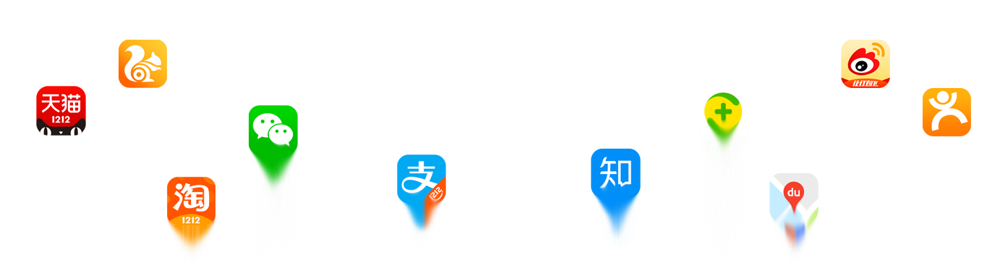
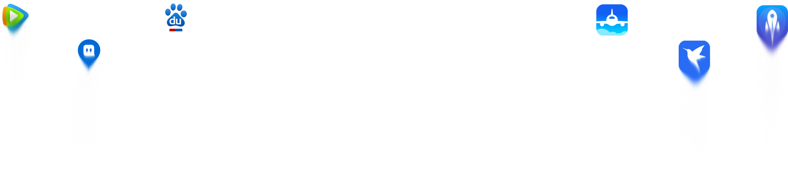

Toggle navigation
首页
IT软件路
IT经济路
IT信息路
IT未来路
广西IT产业路
印象丝路
我们的团队


IT软件路
信息技术的无疆域性已让越来越多的国内软件信息企业不再满足本土市场， 借助当前“一路一带”的政策良机，我国软件信息产业的跨境电子商务领域、 通信信息领域、交通基础软件领域、适合国际化的通用型管理软件领域、软 件外包领域将迎来巨大发展机遇。
软件海外扩张
事实上，信息技术的无疆域性已让越来越多的国内软件信息企业不再满足本土市场，纷纷放眼海外，谋求更大的发展空间。中国企业目前开始专注于高科技、IT、电信等行业，并积极在北美、欧洲、东南亚等成熟市场寻找优质并购目标，将中国的资金、技术、知识产权、品牌引入所在国。
跨境电商
如传统电商只提供商品展示和商品交易撮合服务，对上架的商品质量和真伪缺乏监管；经销商的层层加价，使商品价格居高不下等。面对商机与挑战，能精选海外国家原产地大量丰富商品，并提供商品订购、在线支付、金融贷款等相关配套服务的跨境电子商务平台、互联网厂商，必然迎来重大发展机遇这一切都离不开一带一路的发展。